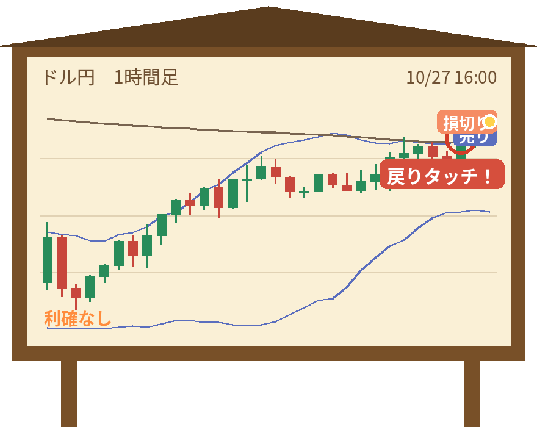

【カピ蔵】ドル円 売り → 損切り -859円（2026/10/27）

「お昼のお湯は、ぽかぽか…」
カピ蔵（担当：押し目B（下限・0.8ATR））が、10月27日 15時ごろにドル円を売り。結果は損切り・-859円（1万通貨の目安）でした。
今回のトレード
| 通貨 | ドル円 |
|---|---|
| 方向 | 売り |
| エントリー | 10/27 15:46 157.779円 |
| 最初の損切り | 157.863円 |
| 利確 | なし（追いかけ） |
| 決済 | 10/27 17:00ごろ 157.863円（損切り） |
| 保有時間 | 約1時間 |
| 成績 | -1.02R（リスク1回分を1とした成績） |
| 損益の目安 | -859円（1万通貨） |
なぜ入った？ 戦法「ゆったり押し目」
ウキ丸と同じ押し目のルールで、損切りを少し遠め（ATRの0.8倍）に置きます。そのぶん、のんびり待てます。
今回のチャートでは「戻りタッチ！」のサインが出ています（下の図の丸印）。

結果
決めておいた損切りの位置に届いて決済しました。損を小さく止めるのもルールのうちです。
「あわてない、あわてない…」
「また明日、お湯で会おうね」
「また明日、お湯で会おうね」